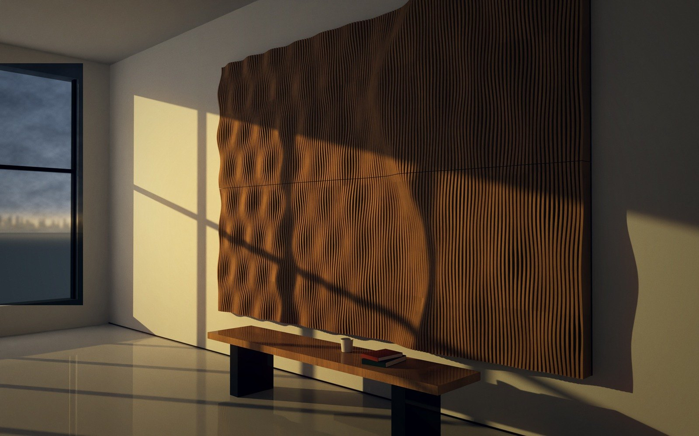
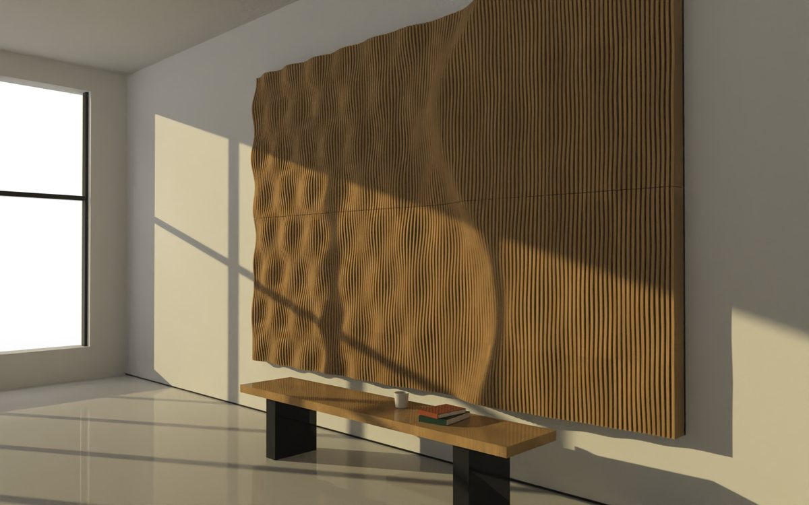
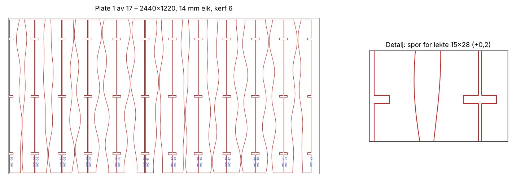

Tekno er et arkitektstudio for biofile opplevelsesrom. Vi starter med hva et rom skal få folk til å føle, og tegner, beregner og produserer derfra.
Bildet er en konseptstudie: Lavtrykk, relieffvegg i eik.Verktøyene for å lage form blir billigere for alle. Å vite hva et rom skal gjøre med mennesker, og å stå for at det kan bygges, blir det ikke.
Hvert prosjekt starter med én setning om hva rommet skal gjøre med folk.
Lys, materialer og bevegelse fra naturen. Aldri grønt som pynt.
Det vi viser, skal kunne bygges. Konseptstudier kalles konseptstudier.
Verktøyene deler vi gratis. Det vi selger, er blikket og helheten.
Vi itererer til det sitter, ikke til det er godt nok.
Idealet er rom som gjør folk roligere, mer våkne og mer til stede, og som tåler tid.
Øyeblikket før uværet kommer inn, i eik.

Rett før et lavtrykk kommer inn, begynner små bølger å risle på tvers av hverandre. Ingenting dramatisk ennå, men du kjenner at noe er på vei. Det var den følelsen vi ville ha inn i et rom.

For interiørarkitekter, utviklere og alle som bygger lobbyer, kontorer og opplevelsesrom.
Vi oversetter et sted eller et merke til en følelse og en form, før noe tegnes i detalj.
Lavtrykk eller et nytt felt, tilpasset rommet og lyset, med visualisering, kappeplan og stykkliste.
Freset og forhåndsmontert sammen med verksted, levert som moduler.
Gratis og åpne Grasshopper-verktøy. De er ikke produktet, men en dør inn.
Deler flater i plater som passer platestørrelsen, nummererer dem og lager kappeliste, uten plugins.
Se på Food4RhinoHele veggen fra skyvere til nestet DXF med lektespor, merking og stykkliste.
Tekno drives av arkitekt Kåre Rømer Claesson i Oslo. Bakgrunn fra arkitektur og fra kreativ ledelse av messer og opplevelser, med parametrisk design som verktøy.
Har du et rom som skal føles som noe?